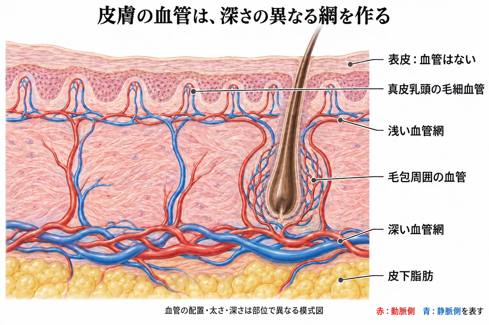
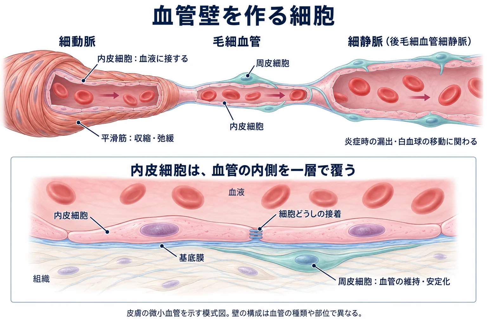
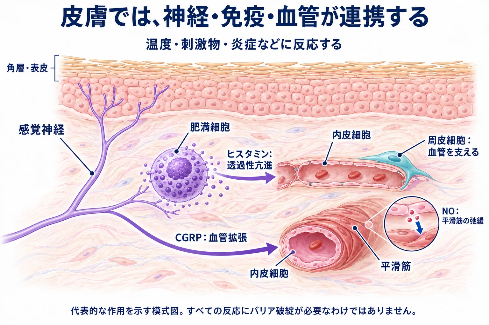
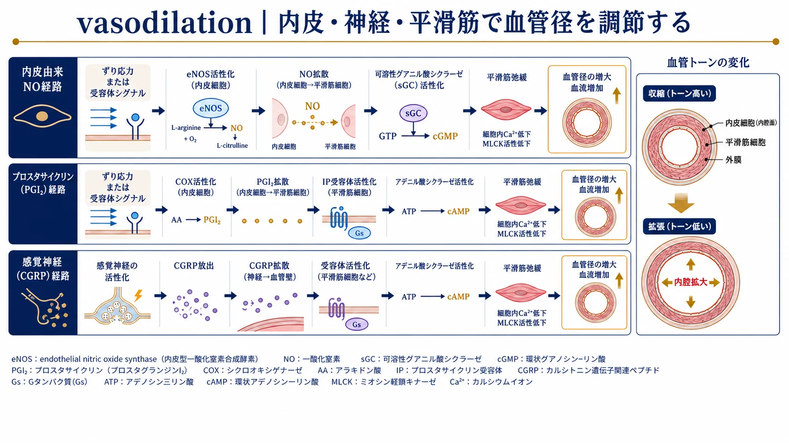
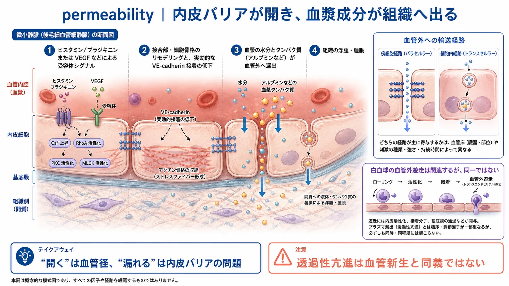
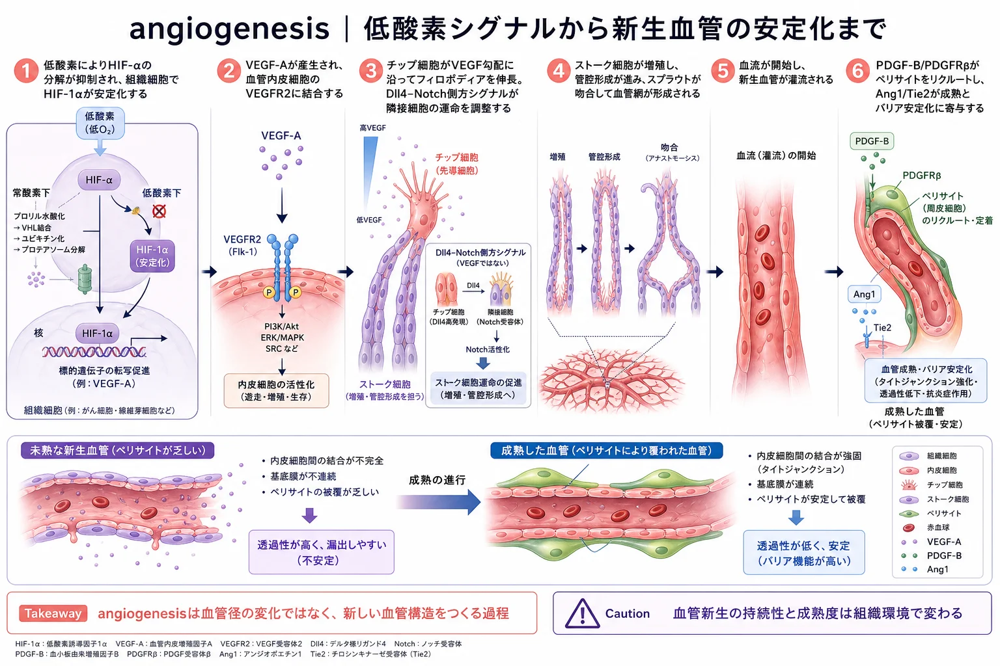

美容皮膚科 ／ 組織の生化学
血管と内皮血管壁の細胞・血流・透過性・血管新生
公開 2026-10-06
血管は、血液を通じて組織へ酸素・栄養・ホルモンを届け、二酸化炭素や代謝産物を運び去ります。同時に、血流の配分や物質の交換を調節し、炎症・止血・修復にも関わります。
皮膚では、血管がどの深さを走り、壁の細胞がどう働くかによって、供給・交換・血流調節が成り立ちます。この章では血管の配置から、壁の細胞、炎症と修復への参加へ進みます。赤みとして見える変化と治療の作用点は赤みの生化学で扱います。
この章の一言
皮膚の血管は、酸素・栄養の供給と体温調節を担い、炎症や修復にも関わります。これらを支える細胞とECMを学び、血流や内皮のバリア、血管を支える構造の変化が、赤み・浮腫・組織の障害にどうつながるかを理解します。
1 皮膚の血管は何をしているのか
| 主な役割 | 皮膚での働き |
|---|---|
| 酸素・栄養の供給と代謝産物の回収 | 皮膚の細胞の代謝を支え、二酸化炭素や代謝産物を血液で運び去る |
| 血流の配分と体温調節 | 血管径を変えて血流を調節する。皮膚へ運ぶ熱の量を変え、体温の維持に関わる |
| 血液と組織の間の交換 | 水分や物質が血管壁を越えて移動する量を調節し、組織の環境を保つ |
| 炎症・感染防御への参加 | 白血球が血液から組織へ移動できるようにし、必要な部位への集積を支える |
| 止血と修復への参加 | 通常は血液の流動性を保ち、損傷時には止血に関わる。修復時には血管新生によって組織への供給を支える |
表皮には血管がありません。真皮の血管から拡散する酸素や栄養が、表皮の細胞も支えています。血液の供給が不足すると、皮膚の細胞の代謝や修復が妨げられ、強い虚血が続けば組織の壊死につながります。血管の働きは、皮膚が生きて働くための基盤です（→ 表皮とターンオーバー、炎症と創傷治癒）。
浅い血管網と深い血管網が、皮膚の各部へ血液を届ける
皮膚の血管は、真皮の上層と、真皮深部から皮下組織との境界付近に血管網を作り、上下につながっています。浅い血管網からは、真皮乳頭へ細い毛細血管ループが伸びます。毛包や汗腺などの付属器にも、その周囲に血管が分布します。

表皮に近いところまで血液を運ぶ配置と、薄い血管壁を介した交換が組み合わさって、表皮への供給を支えます。 ヒト皮膚の血管を立体的に描出した研究でも、深さや部位による血管網の違いが観察されています（皮膚のOCT血管撮影研究, 2018）。
2 役割を分担する血管と、壁を作る細胞
血管の内腔を一層で覆うのが血管内皮細胞（endothelial cell）です。その外側にはECMの一種である基底膜があり、血管の種類に応じて平滑筋や周皮細胞が配置されています。

| 血管 | 壁の特徴 | 主な働き |
|---|---|---|
| 細動脈 | 内皮の外側を平滑筋が囲む | 収縮・弛緩によって、毛細血管網への血流量を調節する |
| 毛細血管 | 壁が薄く、連続した平滑筋層はない。外側に周皮細胞が分布する | 血液と組織の間で酸素・栄養・代謝産物を交換する |
| 細静脈 | 毛細血管からの血液が集まる。後毛細血管細静脈の壁には周皮細胞が分布する | 静脈へ血液を戻す。後毛細血管細静脈は、炎症時の血漿漏出や白血球の移動の主な場所になる |
周皮細胞（pericyte）は、内皮細胞と接触し、血管の維持・安定化に関わります。基底膜や周囲のECMも、細胞が接着する基盤として血管を支えます。血管壁は、これらの細胞とECMが組み合わさった構造です（→ 細胞外基質（ECM））。
3 血管径の調節が、血流と皮膚の色を変える
細動脈の平滑筋が収縮すると内径が小さくなり、血流が減ります。弛緩すると内径が大きくなり、血流が増えます。皮膚では、この調節が酸素・栄養の供給に加え、体温調節にも関わります。
暑い環境では皮膚血流を増やして体内の熱を皮膚へ運び、寒い環境では血流を減らして熱の喪失を抑えます。皮膚表層の血液量が増えると赤みが強くなります。血管拡張は、正常な体温調節でも起こる反応です。
内皮が作る一酸化窒素（NO）は、隣接する平滑筋へ拡散し、弛緩を促します。NOは内皮のeNOS（内皮型NO合成酵素）によって作られます（PMID 3495737）。
詳しく：内皮は、血液が流れる力も感知する
血液が流れると、内皮表面をこする方向の力であるずり応力（shear stress）が加わります。内皮はこの力を感知し、NOの産生などを調節します。血流による機械的な刺激が細胞内の応答へ変わる、mechanotransductionの一例です（→ 細胞外基質（ECM））。
内皮の血液に面する表面には、糖タンパク質やプロテオグリカンなどからなるglycocalyx（グリコカリックス）があります。培養内皮細胞で、ここに含まれるヘパラン硫酸を酵素で除くと、ずり応力に対するNO産生応答が弱まりました。細胞表面の糖鎖も、血流を感知する仕組みに関わります（Florian et al., Circ Res., 2003：PMID 14563712）。
拡張を促す刺激が続くと、赤みも持続する
感覚神経には、温度や化学的刺激を感知するTRPチャネルがあります。その一群がTRPVで、代表的なTRPV1は熱や唐辛子の辛味成分であるカプサイシンに反応します（PMID 9349813）。神経が刺激されると、CGRP（カルシトニン遺伝子関連ペプチド）などが放出され、血管拡張につながります。
酒皶の皮膚ではTRPVの発現変化が報告されています。熱や辛いものによって、ほてりや赤みが増すことを理解するための仕組みの一つです（PMID 22189789）。

炎症に伴うメディエーターや神経からの刺激が続けば、血管拡張も持続し得ます。血管の状態は、周囲の神経・免疫細胞の活動にも左右されます。
詳しく読む：NO・PGI₂・CGRPが平滑筋に作用する経路
NOは平滑筋のsGC（可溶性グアニル酸シクラーゼ）を活性化し、cGMPを増やします。続いてPKGが細胞内Ca²⁺や収縮装置の働きを調節し、弛緩につながります。
内皮由来のprostacyclin（PGI₂）はIP受容体、CGRPはCGRP受容体を介して作用します。代表的な経路ではcAMPが増え、PKAを介して平滑筋の収縮が抑えられます。交感神経のnoradrenalineや内皮由来のendothelin-1は収縮を促す因子です。

感覚神経から放出されるCGRPとsubstance P（サブスタンスP）は、どちらも血管拡張を促します。ヒト皮膚へ投与した研究では、血漿漏出への作用に次の違いがありました。
- CGRP：血管拡張を起こしましたが、血漿タンパク質の漏出は認められませんでした。
- substance P：血管拡張に加え、一定以上の投与濃度で血漿タンパク質の漏出も起こしました。
substance Pによる血漿漏出は、浮腫につながる反応です。この研究での漏出は投与濃度に依存していました（PMID 11121135）。
4 内皮は、物質の交換・炎症・止血に関わる
内皮のバリアが変化すると、血漿成分が漏れやすくなる
内皮細胞どうしは接着し、血液と組織の間のバリアを形成しています。水分や小分子を交換しながら、血球や血漿タンパク質の無制限な漏出を防いでいます。
炎症では、肥満細胞からのhistamineなどが内皮に作用し、細胞間の接着や細胞骨格を変化させます。
その結果、血漿中の水分やアルブミンが血管外へ移動しやすくなります。これが血管透過性の亢進です。漏出する水分がリンパ管による回収を上回ると、浮腫を生じます。蕁麻疹の膨疹も、この反応によるものです（PMID 5801425）。
リンパ管は、組織へ出た水分とタンパク質を回収する
血管から組織へ移動した水分の一部とタンパク質は、リンパ管に取り込まれ、最終的に静脈へ戻ります。リンパ管は免疫細胞がリンパ節へ移る経路でもあります。血管からの流出と、リンパ管による回収が組み合わさって、組織の水分量が保たれます。
炎症時の腫れには、血管から漏れ出る量が増えることと、リンパ回収が追いつかなくなることが関わります。赤みは血管内の血液、浮腫は血管外にたまる水分に注目すると、同じ炎症で起こる二つの所見を整理できます。
詳しく：リンパ回収と炎症の関係を調べた研究
マウスの皮膚炎症モデルでは、VEGF-Cなどによってリンパ管網と排液機能を増強すると、真皮の浮腫や炎症が軽減しました。組織の回復には、血液による供給に加えて、組織液を回収する過程も関わることを示しています（Huggenberger et al., Blood, 2011：PMID 21364190）。
白血球が血管外へ移動し、炎症部位に集まる
炎症性サイトカインを受けた内皮では、白血球が結合する接着分子が増えます。流れている白血球は血管壁で速度を落とし、接着した後に内皮を越えて組織へ移ります。移動する方向は、炎症部位からのケモカイン（細胞の遊走を誘導する分泌因子）などによって調節されます。
| 段階 | 起こること | 主に関わる分子 |
|---|---|---|
| 壁に沿って減速する | 白血球が一時的な結合を繰り返し、血管壁に沿って転がる（rolling） | セレクチンなど |
| 接着して止まる | 白血球の接着が強まり、血流の中でも内皮にとどまる | 白血球のインテグリンと、内皮のICAM-1など |
| 血管外へ移る | 内皮や基底膜を越え、炎症部位へ移動する | 接着・細胞骨格・遊走を調節する分子群 |
rollingと強い接着が異なる分子の働きで進むことは、流れを再現した実験で示されています（Lawrence and Springer, Cell, 1991：PMID 1710173）。血管透過性の変化と白血球の通過には、それぞれを調節する仕組みがあります（PMID 24487320）。
皮膚の炎症では、血流の増加による赤み、血漿漏出による腫れ、白血球の浸潤が重なって起こります。白血球の集積は感染防御や損傷部の処理に必要ですが、炎症刺激が続くと浸潤も持続し、組織の障害につながることがあります（→ 炎症と創傷治癒）。
詳しく読む：内皮バリアを通過する仕組み
内皮の接着にはVE-cadherin（血管内皮カドヘリン）が関わります。histamine・bradykinin・VEGFなどは、接着や細胞骨格の状態を変え、透過性を調節します（PMID 11009566）。

物質は、細胞間を通る傍細胞経路や、小胞輸送などによって細胞内を通る経細胞経路で移動します。図のCa²⁺・RhoA・MLCKは接着や骨格を調節する因子です。白血球の移動には、内皮への接着と通過を調節する仕組みが別に働きます。
内皮は血液の流動性を保ち、損傷時には止血が起こる
正常な内皮は、NOやprostacyclin（PGI₂）などを介して血小板の凝集を抑え、血液が流れる状態を保ちます（PMID 3322462）。
血管が傷つくと、内皮の下にあるコラーゲンなどが血液に露出し、血小板の接着・凝集と凝固反応によって出血が止まります。止血は必要な反応ですが、血栓が血管を閉塞すると、その先への血液供給が妨げられます。止血と凝固の過程は炎症と創傷治癒で扱います。
5 血管新生と成熟が、修復する組織を支える
修復中の組織では、増殖する細胞へ酸素や栄養を供給する血管が必要になります。血管新生（angiogenesis）は、既存の血管から新しい血管が形成される過程です。低酸素や炎症に伴って産生されるVEGF（血管内皮増殖因子）などが内皮に作用し、内皮細胞の移動と増殖を促します。伸びた血管に内腔が形成され、ほかの血管とつながることで血液が流れます。
形成された血管は、成熟して安定する
内皮細胞間の接着が整い、基底膜や周皮細胞による支持が加わると、血管は成熟・安定化します。成熟が不十分な新生血管は、血漿成分が漏れやすい場合があります（PMID 10617467）。
修復が進むと、血管網も作り替えられる
増殖する細胞の多い修復組織では、血管も増えます。修復が進むと、形成された血管の一部が維持され、一部が退縮し、血管網が再編されます。維持される血管では、内皮の接着と周皮細胞・基底膜による支持が整っていきます。
傷の表面が閉じた後も、その下の血管とECMの再構築は続きます。 修復中の皮膚の赤みが、表皮の閉鎖と同じ時期に消えるとは限らない理由の一つです。血管の維持・退縮には、血流、成長因子への依存性、周皮細胞による被覆などが関わります。
炎症や低酸素などの刺激が続けば、血管新生を促すシグナルも持続し得ます。血管が作られることと、接着や支持構造が整って安定することは、両方が必要です。
詳しく読む：血管が伸び、成熟・退縮する分子機構
低酸素ではHIF-1αの分解が抑えられ、VEGFなどの遺伝子発現が増えます。VEGF-Aの代表的な受容体はVEGFR2です。
伸長方向を誘導する先端のtip細胞、後方で増殖や内腔形成に関わるstalk細胞は、血管新生中の内皮細胞の役割を表します。その分担にはDll4–Notchシグナルが関わります（PMID 17259973）。
周皮細胞の動員にはPDGF-B／PDGFRβ、内皮の安定化にはAng1／Tie2などが関わります。

発生中の網膜や腫瘍の研究では、周皮細胞の被覆やVEGFへの依存性が、血管の退縮しやすさに関係しています（PMID 9521897、PMID 9916127）。
血管に関わる因子は、色素形成にも作用する
血管は、皮膚の赤みに加えて色素形成にも関わります。肝斑の病変部では、周囲の皮膚より血管の数・大きさが増え、VEGFの発現も高まっていました（Kimら, 2007）。
ヒトの培養メラノサイトでは、VEGFがメラニン産生を促すことが報告されています。また、血管内皮が分泌するエンドセリン1も、メラノサイトに作用して色素形成を促します（Zhuら, 2020、Regazzettiら, 2015）。これらの作用が患者の肝斑にどの程度寄与するかは、研究が続いています。病変での変化と細胞実験の詳しい内容は肝斑で扱います。
6 皮膚の血管を、構造と働きの両方から見る
皮膚には深さや太さの異なる血管が分布し、枝分かれして互いにつながっています。見えている赤みの背景には、血管の配置と、その中にある血液、血管壁の状態があります。
| 見る要素 | 血管の何を表しているか |
|---|---|
| 深さ・太さ・分布 | 皮膚のどの深さに、どの程度の太さの血管が、どのように広がっているか |
| 血液の量と流れ | 血管内にどの程度の血液があり、どのように流れているか。血流量は平滑筋や神経などの調節を受ける |
| 血管壁と周囲のECM | 内皮の接着、平滑筋・周皮細胞による調節や支持、基底膜や周囲のECMによる支えが、どのような状態にあるか |
血管の構造を捉えると、血液量が増える赤み、血漿が漏れる浮腫、供給が途絶える虚血を区別できます。赤みとして現れる所見と、治療が働く段階は赤みの生化学へ、光と熱による血管への作用は血管レーザーへつながります。
この章の到達点
- 皮膚の血管は、細胞の代謝と体温調節を支えます。十分な血液供給は、皮膚の維持と修復に必要です。
- 役割は、血管の種類と壁の細胞によって分担されています。平滑筋は血流を調節し、内皮は物質の交換や白血球の移動を調節します。周皮細胞とECMは血管を支えます。
- 血流、バリア、血液の流動性の変化は、異なる問題につながります。血液量の増加は赤み、血漿漏出の増加は浮腫、血流の途絶は虚血につながります。
- 修復には、血管の形成・安定化・再編と、リンパ管による回収が関わります。皮膚表面が閉じた後も、内部の組織は変化を続けます。
中核参考文献
- Palmer RM, Ferrige AG, Moncada S. Nitric oxide release accounts for the biological activity of endothelium-derived relaxing factor. Nature. 1987;327:524–526. PMID 3495737.
- Majno G, Shea SM, Leventhal M. Endothelial contraction induced by histamine-type mediators: an electron microscopic study. J Cell Biol. 1969;42:647–672. PMID 5801425.
- Wessel F, et al. Leukocyte extravasation and vascular permeability are each controlled in vivo by different tyrosine residues of VE-cadherin. Nat Immunol. 2014;15:223–230. PMID 24487320.
- Hellström M, et al. Dll4 signalling through Notch1 regulates formation of tip cells during angiogenesis. Nature. 2007;445:776–780. PMID 17259973.
- Benjamin LE, Hemo I, Keshet E. A plasticity window for blood vessel remodelling is defined by pericyte coverage of the preformed endothelial network and is regulated by PDGF-B and VEGF. Development. 1998;125:1591–1598. PMID 9521897.
- Florian JA, et al. Heparan sulfate proteoglycan is a mechanosensor on endothelial cells. Circ Res. 2003;93:e136–e142. PMID 14563712.
- Lawrence MB, Springer TA. Leukocytes roll on a selectin at physiologic flow rates: distinction from and prerequisite for adhesion through integrins. Cell. 1991;65:859–873. PMID 1710173.
- Huggenberger R, et al. An important role of lymphatic vessel activation in limiting acute inflammation. Blood. 2011;117:4667–4678. PMID 21364190.
- Kim EH, et al. The vascular characteristics of melasma. J Dermatol Sci. 2007;46:111–116. PMID 17363223. DOI: 10.1016/j.jdermsci.2007.01.009.
- Zhu JW, et al. Activation of VEGF receptors in response to UVB promotes cell proliferation and melanogenesis of normal human melanocytes. Exp Cell Res. 2020;387:111798. PMID 31874175. DOI: 10.1016/j.yexcr.2019.111798.
- Regazzetti C, et al. Endothelial Cells Promote Pigmentation through Endothelin Receptor B Activation. J Invest Dermatol. 2015;135:3096–3104. PMID 26308584. DOI: 10.1038/jid.2015.332.